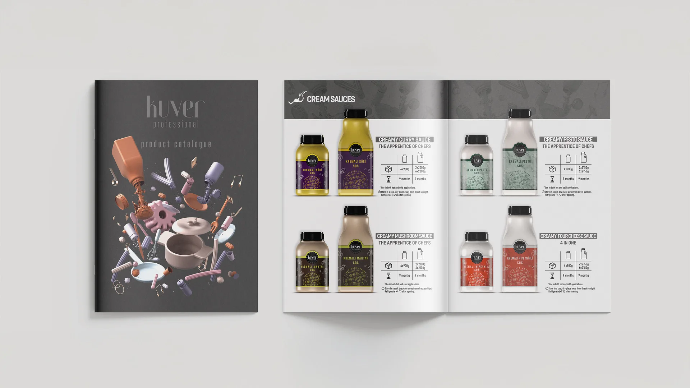
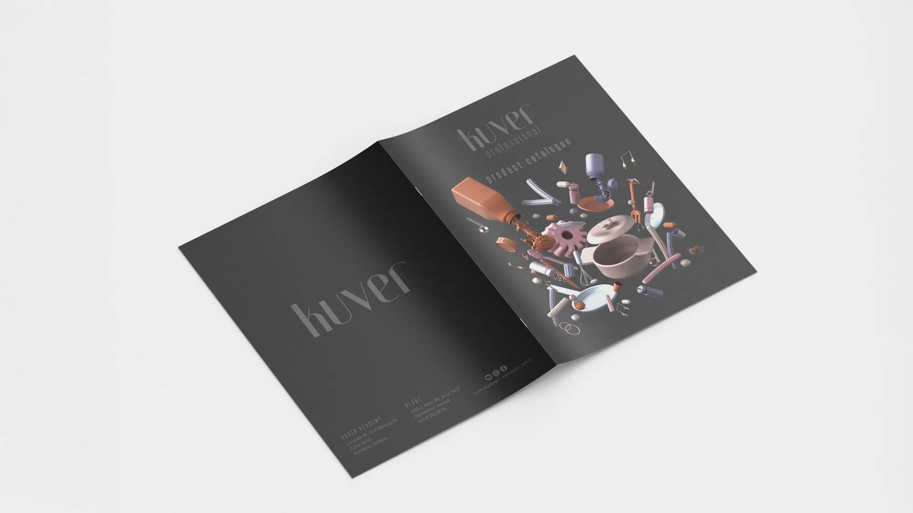
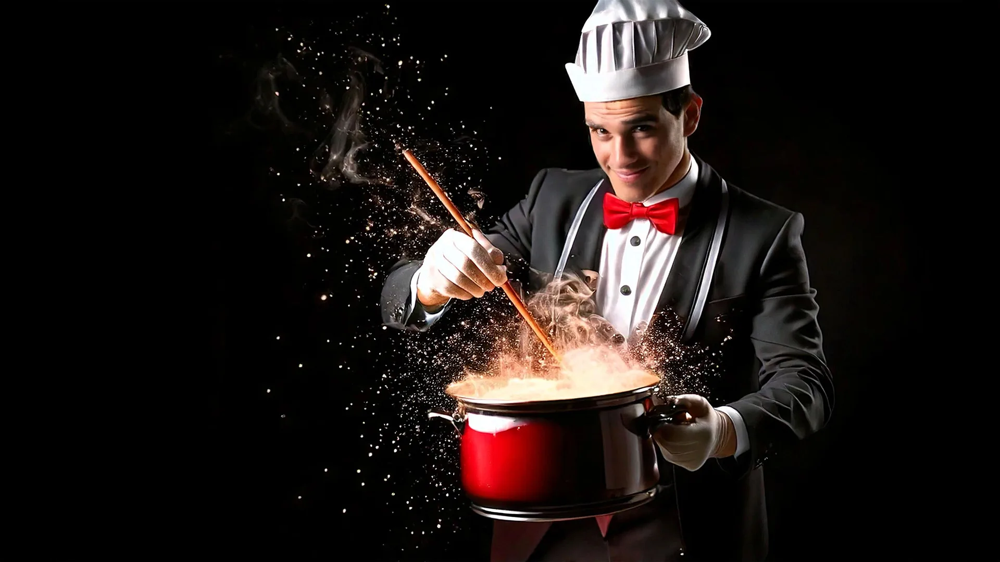

Seçilmiş projeler / 03Profesyonel Ürünler
Kuver Professional.
Mutfak şefi ve orkestra şefi.
Kuver Professional marka kimliği, mutfak şefinin lezzetleri ve orkestra şefinin melodileri uyum içinde birleştirmesi fikrinden doğdu.



Hareket halindeTasarıma bir de
Tasarıma bir de
bu açıdan bakın.
Proje filmi
Video yakında.
Tat ve ritmin buluşması
Müzik notalarından ilham alan logo fikri; sosları, mutfak araçlarını ve ritmi buluşturan bir görsel dünyayla genişledi. Bu dil ambalaj, katalog ve one pager çalışmalarında sürdürüldü.
Benzer bir proje konuşalım ↗Bir sonraki projenizi
birlikte tasarlayalım.